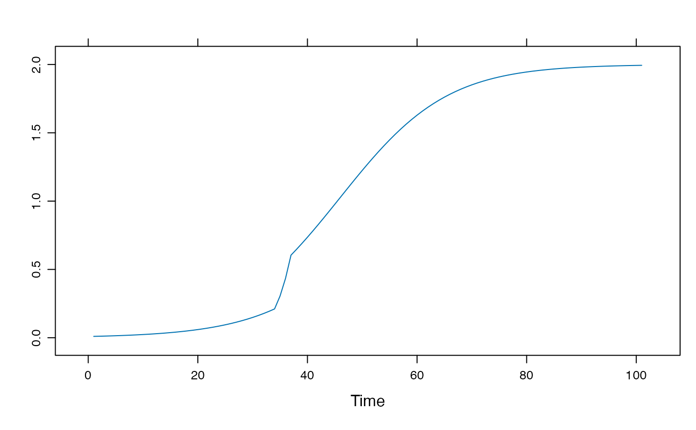

Conditional Autocatlytic Growth: Iterating differential equations (maps)
Usage
growth_ac_cond(
Y0 = 0.01,
r = 0.1,
k = 2,
cond = cbind.data.frame(Y = 0.2, par = "r", val = 2),
N = 100
)See also
Other autocatalytic growth functions:
growth_ac()
Examples
# Plot with the default settings
library(lattice)
xyplot(growth_ac_cond())
# The function can take a set of conditional rules
# and apply them sequentially during the iterations.
# The conditional rules are passed as a `data.frame`
(cond <- cbind.data.frame(Y = c(0.2, 0.6), par = c("r", "r"), val = c(0.5, 0.1)))
#> Y par val
#> 1 0.2 r 0.5
#> 2 0.6 r 0.1
xyplot(growth_ac_cond(cond=cond))

# Combine a change of `r` and a change of `k`
(cond <- cbind.data.frame(Y = c(0.2, 1.99), par = c("r", "k"), val = c(0.5, 3)))
#> Y par val
#> 1 0.20 r 0.5
#> 2 1.99 k 3.0
xyplot(growth_ac_cond(cond=cond))
 # A fantasy growth process
cond <- cbind.data.frame(Y = c(0.1, 1.99, 1.999, 2.5, 2.9),
par = c("r", "k", "r", "r","k"),
val = c(0.3, 3, 0.9, 0.1, 1.3))
xyplot(growth_ac_cond(cond=cond))
# A fantasy growth process
cond <- cbind.data.frame(Y = c(0.1, 1.99, 1.999, 2.5, 2.9),
par = c("r", "k", "r", "r","k"),
val = c(0.3, 3, 0.9, 0.1, 1.3))
xyplot(growth_ac_cond(cond=cond))